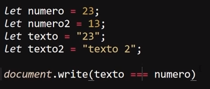
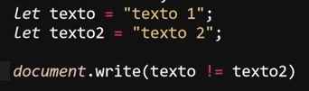
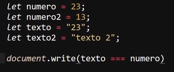
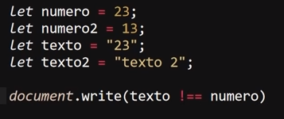
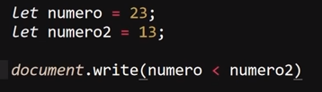
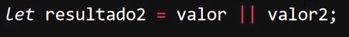

Operadores Intermedios
Operadores de Comparación
Estos operadores comparan dos expresiones y devuelven un valor boolean (true o false) que representa la relación de sus valores, en otras palabras estos operadores comparan la relación de dos expresiones y analisan si se cumple o no la relación indicada, existen diversos tipos de operadores de comparación los cuales son:
Igualdad
-
Este operador analisa el si las dos expresiones comparten el mismo valor.

El resultado de este ejemplo es "True", ya que el valor de ambas variables es el mismo.
Este operador se caracteriza por no tener el cuanta el tipo de dato de la variable, unicamete el valor de esta.

Por lo tanto el resultado de este segundo ejemplo es "True", ya que pese a que la variable texto y numero almacenan un String y un number respectibamente, el valor de ambos datos es el mismo.
Inegualdad
-
Este operador analisa el si las dos expresiones son difernetes una de la otra.

El resultado de este ejemplo es "False", ya que los caracteres de ambas cadenas de texto pese a ser similar en realidad es diferente.
Nota: Este operador es el opuesto a "Igualdad", por lo tanto tampoco tiene en cuenta el tipo de dato de las expresiones, unicamete tiene en cuenta su valor.
Estrictamente Igual
-
Este operador se asemeja a la igualdad, sin embargo se diferencia de esta ya que este no solo tiene en cuata el valor del dato, si no tambien tiene en cuanta el tipo de deste, por lo tanto este operador juzga si las expresiones son exactamte iguales.

Por lo tanto el resulta de este ejemplo es "False", ya que pese a que el valor de ambas variables es el mismo su tipo de dato no lo es.
No Estrictamente Igual
-
Se trata de la negación del operador "Estrictamente Igual", por lo tanto su función es la de determinar si los elemetos son diferentes, teniendo en cuanta tanto su valor como su dato.

Por lo tanto el resulado de este ejemplo es "True", ya que ambas variables comparten valor pero no tipo de dato.
Mayor Que
-
Este operador analiza si el elemento de la izquierda es mayor que el de la derecha, y retorna True o False.

Por lo tanto el resultado de este ejemplo es "True", ya que 23 efectivamente es mayor a 13.
Menor Que
-
Este operador analiza si el elemento de la izquierda es menor que el de la derecha, y retorna True o False.

Por lo tanto el resultado de este ejemplo es "False", ya que 23 no es menor a 13.
Mayor o Igual Que
-
Este operador analiza si el elemento de la izquierda es mayor o igual que el de la derecha, por lo tanto mantiene la igualdad como una posivilidad para cumplir la relación.

Por lo tanto el resultado de este ejemplo es "True", ya que 23 pese a no ser igual a 13 ciertamete es mayor.
Menor o Igual Que
-
Este operador analiza si el elemento de la izquierda es menor o igual que el de la derecha, por lo tanto mantiene la igualdad como una posivilidad para cumplir la relación.

Por lo tanto el resultado de este ejemplo es "False", ya que 23 no es ni menor ni igual a 13.
peradores Logicos
Los operadores logiacos devuelven un resultado boolean (True o Flase) a partir de si se cumple o no una condición,
AND
-
Este operador es representado por "&&" y determina el si se cumplen ambas condiciones, tanto la de la derecha como la de la izquierda, en cuyo caso retornara un True, pero si se da que una de estas dos se incumple entonces retornara en False.

OR
-
Este operador es representado por "||" y determina el si se cumple una de las condiciones, ya sea la de la derecha o la de la izquierda, en cuyo caso retornara un True, pero si se da el caso de que se incumplen ambas condiciones entonces retornara un False.

NOT
-
Este operador en si se trata de una negación, simplemente retornara lo contrario a lo que reciba, es decir si recibe una condición que se cumpla (True) retornara un Fase, por el contrariocuando se incumpla la condición (False) retornara un True.